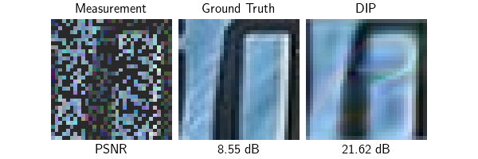

Note
New to DeepInverse? Get started with the basics with the 5 minute quickstart tutorial..
Reconstructing an image using the deep image prior.#
This code shows how to reconstruct a noisy and incomplete image using the deep image prior.
This method is based on the paper “Deep Image Prior” Ulyanov et al.[1] and reconstructs an image by minimizing the loss function
where \(z\) is a random input and \(f_{\theta}\) is a convolutional decoder network with parameters \(\theta\). The minimization should be stopped early to avoid overfitting. The method uses the Adam optimizer.
import deepinv as dinv
from deepinv.utils.plotting import plot
import torch
from deepinv.utils import load_example
Load image from the internet#
This example uses an image of Messi.
device = dinv.utils.get_device()
x = load_example("messi.jpg", img_size=32).to(device)
# Set the global random seed from pytorch to ensure reproducibility of the example.
torch.manual_seed(0)
Selected GPU 0 with 5015.25 MiB free memory
<torch._C.Generator object at 0x7fd615db5c90>
Define forward operator and noise model#
We use image inpainting as the forward operator and Gaussian noise as the noise model.
sigma = 0.1 # noise level
physics = dinv.physics.Inpainting(mask=0.5, img_size=x.shape[1:], device=device)
physics.noise_model = dinv.physics.GaussianNoise(sigma=sigma)
Generate the measurement#
We apply the forward model to generate the noisy measurement.
Define the deep image prior#
This method only works with certain convolutional decoder networks. We recommend using the
network deepinv.models.ConvDecoder.
Note
The number of iterations and learning rate have been set manually to obtain good results. However, these values may not be optimal for all problems. We recommend experimenting with different values.
Note
Here we run a small number of iterations to reduce the runtime of the example. However, the results could be improved by running more iterations.
iterations = 100
lr = 1e-2 # learning rate for the optimizer.
channels = 64 # number of channels per layer in the decoder.
in_size = [2, 2] # size of the input to the decoder.
backbone = dinv.models.ConvDecoder(
img_size=x.shape[1:], in_size=in_size, channels=channels
).to(device)
f = dinv.models.DeepImagePrior(
backbone,
learning_rate=lr,
iterations=iterations,
verbose=True,
input_size=[channels] + in_size,
).to(device)
/local/jtachell/deepinv/deepinv/examples/optimization/demo_dip.py:82: DeprecationWarning: Argument 'input_size' is deprecated and will be removed in a future version. Use 'img_size' instead.
f = dinv.models.DeepImagePrior(
Run DIP algorithm and plot results#
We run the DIP algorithm and plot the results.
The good performance of DIP is somewhat surprising, since the network has many parameters and could potentially overfit the noisy measurement data. However, the architecture acts as an implicit regularizer, providing good reconstructions if the optimization is stopped early. While this phenomenon is not yet well understood, there has been some efforts to explain it. For example, see Tachella et al.[2].
dip = f(y, physics)
# compute linear inverse
x_lin = physics.A_adjoint(y)
# compute PSNR
psnr_linear = dinv.metric.PSNR()(x, x_lin).item()
psnr_dip = dinv.metric.PSNR()(x, dip).item()
# plot results
plot(
{
"Measurement": y,
"Ground Truth": x,
"DIP": dip,
},
subtitles=["PSNR", f"{psnr_linear:.2f} dB", f"{psnr_dip:.2f} dB"],
)

0%| | 0/100 [00:00<?, ?it/s]
9%|▉ | 9/100 [00:00<00:01, 83.12it/s]
21%|██ | 21/100 [00:00<00:00, 100.28it/s]
33%|███▎ | 33/100 [00:00<00:00, 106.87it/s]
45%|████▌ | 45/100 [00:00<00:00, 109.08it/s]
57%|█████▋ | 57/100 [00:00<00:00, 110.71it/s]
69%|██████▉ | 69/100 [00:00<00:00, 111.85it/s]
81%|████████ | 81/100 [00:00<00:00, 112.68it/s]
93%|█████████▎| 93/100 [00:00<00:00, 113.62it/s]
100%|██████████| 100/100 [00:00<00:00, 110.04it/s]
- References:
Total running time of the script: (0 minutes 1.925 seconds)